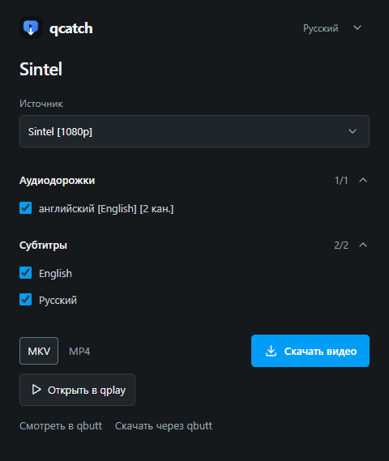

Установка расширения
Установщик подготовит qcatch и папку расширения. В Edge или Chrome включите режим разработчика на странице расширений, выберите «Загрузить распакованное» и укажите папку из инструкции после установки. Инструкция по установке.
Выбирайте найденное видео, звуковые дорожки и субтитры на открытой странице. Сохраняйте их на компьютер или открывайте видео в qplay.
Для Edge и Chrome. Расширение пока устанавливается вручную.

Установщик подготовит qcatch и папку расширения. В Edge или Chrome включите режим разработчика на странице расширений, выберите «Загрузить распакованное» и укажите папку из инструкции после установки. Инструкция по установке.
qcatch обнаруживает доступные странице HLS, DASH и прямые видеопотоки. Можно сохранить отдельное аудио или выбранные дорожки вместе с видео. DRM-видео не поддерживается.